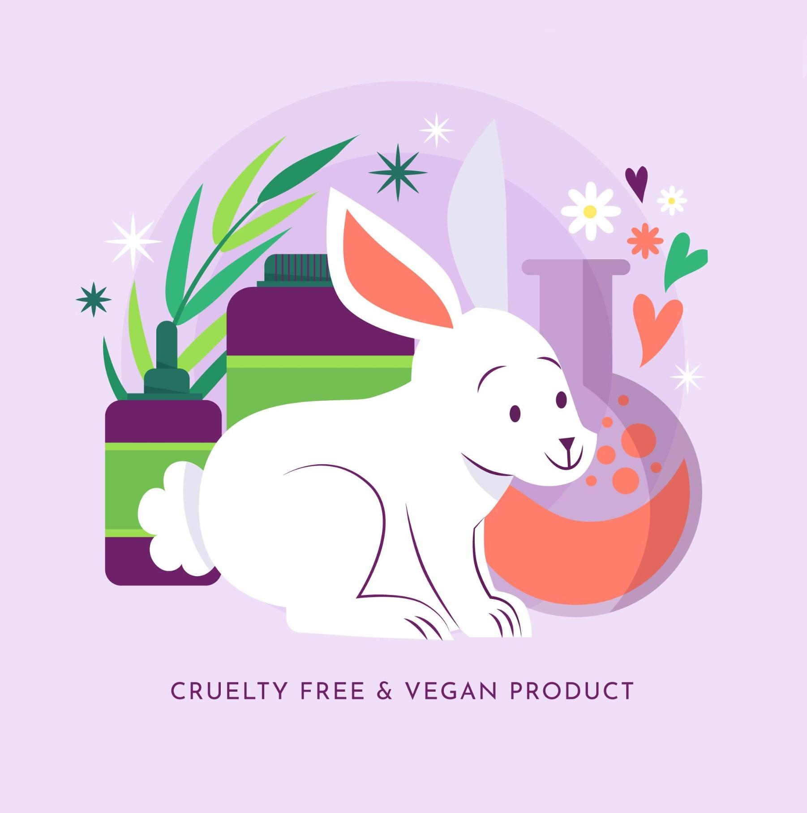

PawsitiveChoice
Tento project je zaměřen na vzdělávání a zvyšování povědomí o negativních důsledcích testování na zvířatech. Na naší platformě najdou uživatelé bohaté množství informací o etických obavách a škodlivých vlivech, které testování na zvířatech přináší jak zvířatům, tak i životnímu prostředí. Kromě toho nabízíme pohodlnou funkci, která umožňuje uživatelům pomocí svých mobilních zařízení rychle skenovat čárové kódy produktů a ověřit, zda byly testovány na zvířatech.
Snažíme se tím poskytnout spotřebitelům důležité informace a podpořit je v uvědomělých a soucitných rozhodnutích při nákupu, podporujících způsob života bez krutosti a hájících blaho zvířat po celém světě!